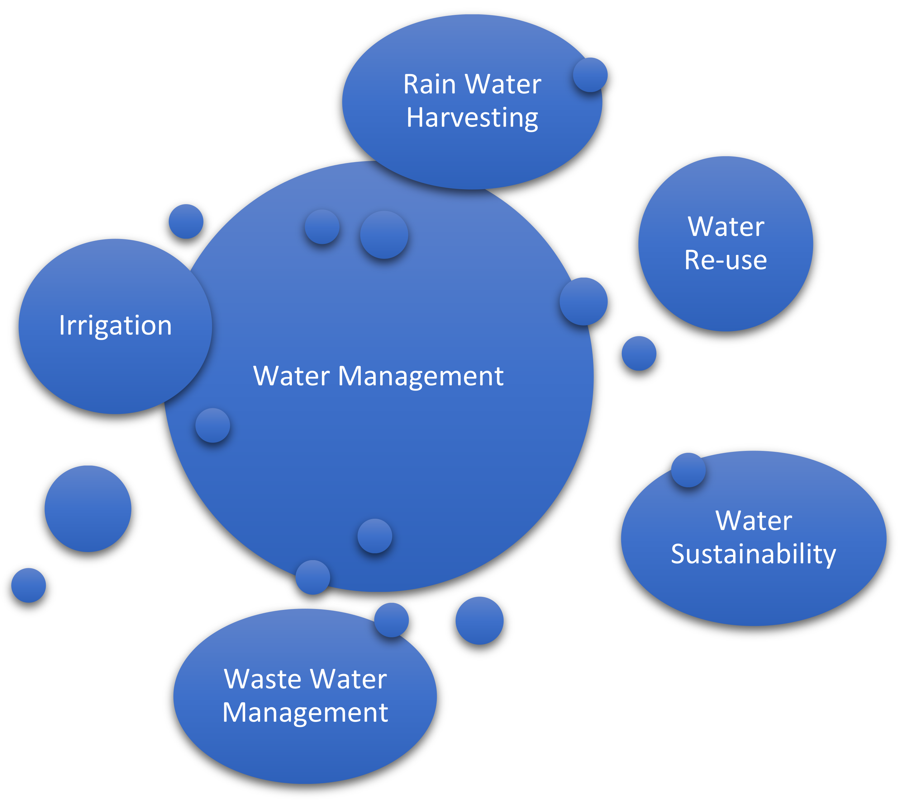

L'IA dans la Gestion des Ressources Hydriques
Optimisation de la Distribution
Détection des fuites en temps réel grâce aux capteurs intelligents et algorithmes prédictifs
Optimisation des réseaux de distribution avec ajustement automatique des flux
Maintenance prédictive des infrastructures pour prévenir les défaillances
Prévision de la Demande
Analyse des données historiques et météorologiques pour anticiper les besoins
Gestion intelligente de l'irrigation agricole pour économiser jusqu'à 30% d'eau
